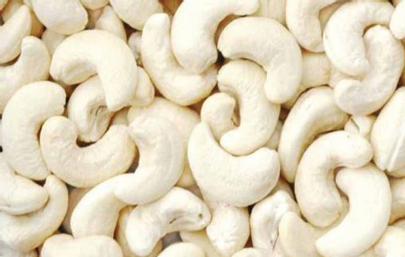
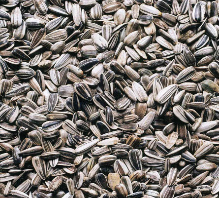
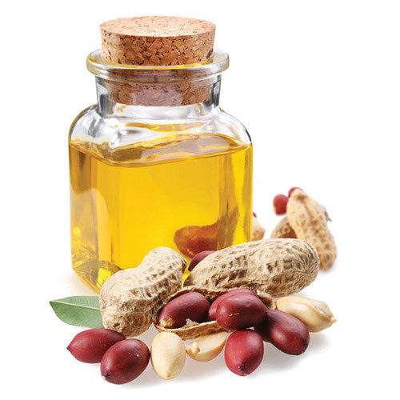
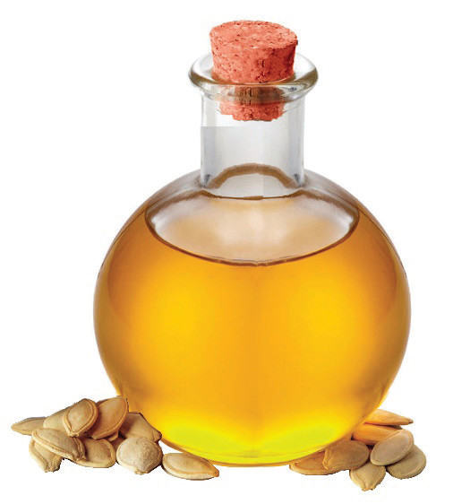
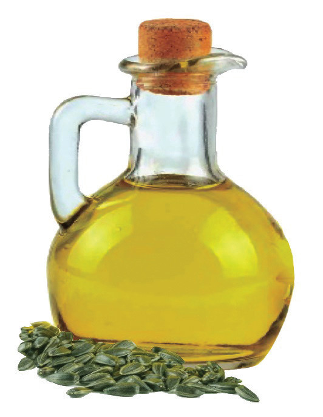

Food and Human Nutrition for Secondary Schools: Student’s Book Form One

Cashew nuts

sunflower seeds
Figure 6.2:
Nuts and oil seeds

Groundnut oil

Pumpkin oil

sunflower oil
Figure 6.3:
Oils from oil seeds
129